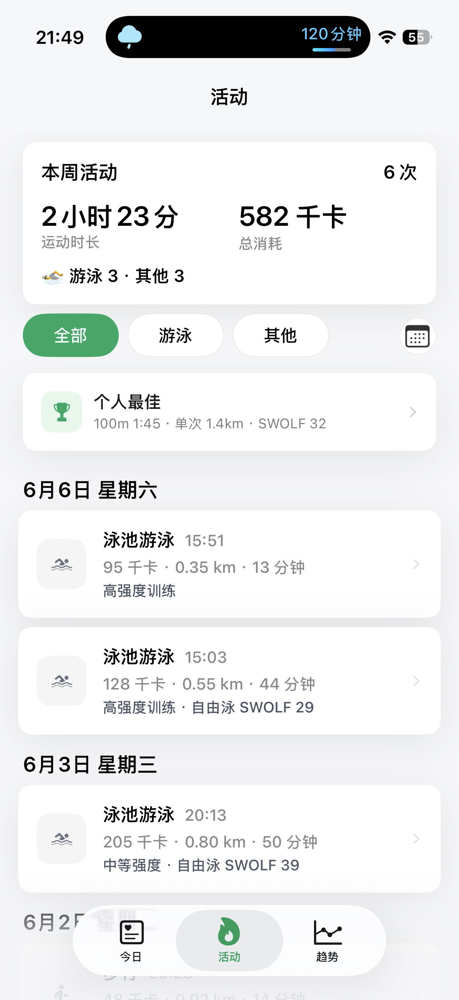
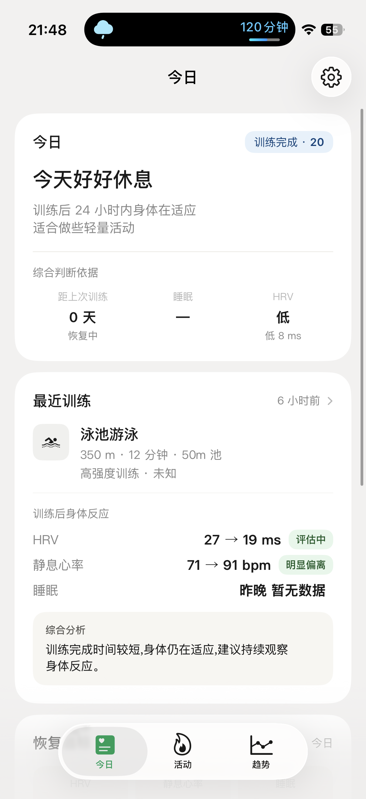

For pool swimmers · Apple Watch为泳池游泳者打造 · Apple Watch
See your swimming progress.
看见你的 游泳进步。
SwimTrace turns each pool session into net pace, SWOLF, per-stroke splits, and personal bests — then shows it against your history. Not just a log: a clear picture of whether you are actually getting faster.
Performance is the main line — pace, splits, bests. Recovery is the supporting line that tells you when your body is ready to chase them.
游泳表现是主线——配速、分段、个人最佳；运动恢复是支撑线——告诉你身体什么时候准备好去冲它。
Swim performance · main line游泳表现 · 主线
Every length, measured honestly
每一趟，都被诚实地量化
From the moment you push off, SwimTrace reads your swim and breaks it down the way swimmers actually think about it.
从你蹬壁出发的那一刻起，SwimTrace 就按游泳者真正在意的方式拆解这次训练。
Net pace (rest removed)
SWOLF efficiency
Distance & lengths
Per-stroke splits
Personal bests
Progress trends
净配速（去掉组间休息）
SWOLF 划水效率
距离与圈数
分泳姿配速
个人最佳
进步趋势

Recovery · supporting line运动恢复 · 支撑线
Know when you are ready
知道自己什么时候准备好
Readiness, HRV, sleep, and load are read from Apple Health so a hard swim lands on a day your body can actually take it.
运动准备度、HRV、睡眠与负荷来自 Apple Health，让强度落在身体真正扛得住的那天。
Training readiness
Heart-rate variability (HRV)
Sleep quality
Load & recovery balance
运动准备度
心率变异性（HRV）
睡眠质量
负荷与恢复平衡

Why it is different
和原生有何不同
Four things the watch won't tell you.
原生不会告诉你的 四件事。
Apple Watch records the swim. SwimTrace reads it the way a coach would.
Apple Watch 把这次游泳记下来；SwimTrace 像教练一样把它读懂。
01
Net pace
Pace that understands intervals
懂间歇的净配速
Rest between sets quietly inflates your average pace. SwimTrace removes the rest and shows the pace you actually swam — so a real effort isn't watered down by standing at the wall.
Every session is placed next to your history and personal bests. Instead of a wall of numbers, you see the line that matters: are you improving, holding, or slipping?
Freestyle, breaststroke, backstroke, and butterfly are kept strictly apart — and so is every pool length. Your free pace is never averaged together with your breaststroke.
自由泳、蛙泳、仰泳、蝶泳严格分列，每种池长也分开统计。你的自由泳配速，绝不会和蛙泳被平均到一起。
4strokes split out泳姿独立统计
04
Guardrails
Bad data, caught for you
替你把关数据
A misread turn or a physically impossible split shouldn't become a fake personal best. SwimTrace flags those segments automatically and leaves them out of your results.
Why is my pace different from the native Workout app?为什么配速和原生「体能训练」不一样？
SwimTrace shows net pace: it removes the rest between sets so the number reflects the speed you actually swam. The native average often blends in time spent resting at the wall, which makes a hard interval look slower than it was.
Why does SwimTrace need HealthKit permission?为什么需要 HealthKit 权限？
Your swims, heart rate, sleep, and related metrics are recorded by Apple Watch into Apple Health. SwimTrace reads those records (with your permission) to calculate pace, splits, and recovery. Without HealthKit access there is no swim data to analyze.
你的游泳、心率、睡眠等数据由 Apple Watch 记录到 Apple「健康」中。SwimTrace 在你授权后读取这些记录，用于计算配速、分段和恢复。没有 HealthKit 权限，就没有可分析的游泳数据。
Is my data uploaded anywhere?我的数据会被上传吗？
No. SwimTrace processes everything on your device. There is no SwimTrace server, no account, and no third-party analytics or advertising SDKs. Your data is not uploaded, sold, or shared.
Freestyle, breaststroke, backstroke, and butterfly are tracked strictly separately, and each pool length is kept distinct too. Your freestyle pace is never averaged together with another stroke.
How do I manage or cancel a subscription?如何管理或取消订阅？
Premium is billed through your Apple account using Apple StoreKit. Renewal, billing, and cancellation are all managed in your Apple account's subscription settings — the developer never handles your payment information.
高级版通过 Apple StoreKit、由你的 Apple 账户结算。续费、账单和取消都在 Apple 账户的订阅设置中完成——开发者不会接触你的支付信息。
What can I see on Apple Watch?Apple Watch 上能看到什么？
SwimTrace relies on the swim Apple Watch records during your session. After the swim, your pace, splits, distance, and recovery context appear on iPhone where there is room to compare against your history.
SwimTrace 依赖 Apple Watch 在训练中记录的游泳数据。游完之后，配速、分段、距离与恢复信息会在 iPhone 上呈现，那里有足够空间和你的历史成绩做对比。
What happens to abnormal or impossible data?异常或不可能的数据会怎么处理？
A misread turn can produce a split that's physically impossible. SwimTrace detects those segments, marks them clearly, and leaves them out of your results so they never become a fake personal best.